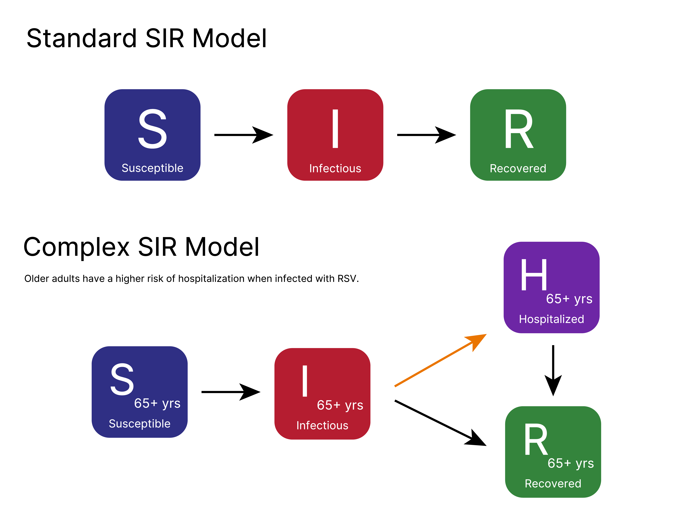
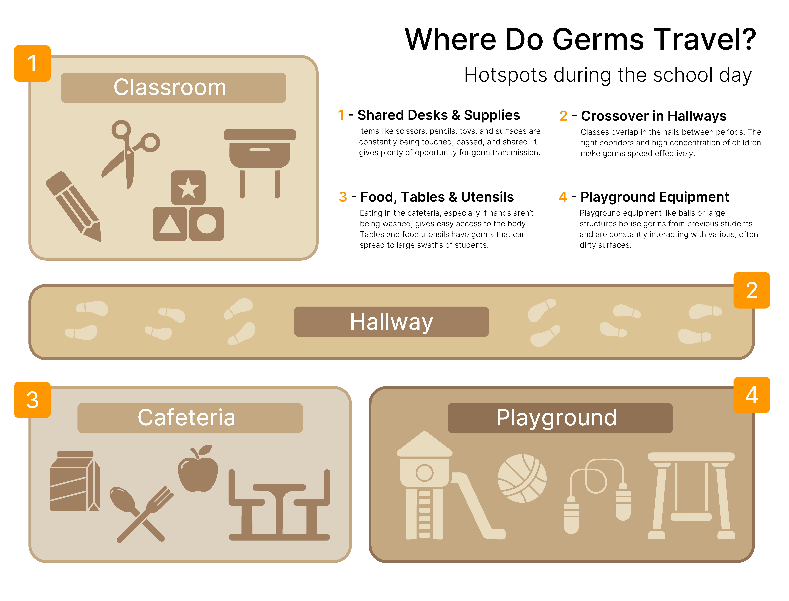

Every school year, classrooms become hotbeds for diseases. Children sit close together, touch the same surfaces, and frequently touch their eyes, noses, and mouths throughout the day. Common illnesses like norovirus, salmonella, and respiratory infections, like adenovirus, thrive in these environments. The consequences aren't trivial: according to the CDC, approximately 1.8 million children under the age of five die each year from diarrheal diseases and pneumonia worldwide.
To understand how an illness tears through a school, epidemiologists use a framework called the SIR model. A population can be divided into three groups: Susceptible (healthy but at risk), Infectious (sick and contagious), and Recovered (no longer contagious). Every student starts in the "Susceptible" group. When an infectious student interacts with a susceptible one, there's a chance for the disease to transfer, making the other student infected as well. After the period of the illness is over, they can be moved to the "Recovered" category.

The transmission rate is the probability that a contact between an infectious and susceptible person results in infection, and it is a key rate in SIR models. In a school, this rate is naturally high. Kids are tightly grouped in classrooms and extracurricular spaces, and younger children are still developing effective hygiene habits.
A single sick child on Monday can mean a dozen sick children by Friday.
Schools concentrate large numbers of children into small, shared spaces for hours at a time. A typical elementary classroom might have 20 to 30 students interacting in close proximity throughout the day. They share art supplies, toys, and communal lunch tables. Each of these moments is an opportunity for the disease to transfer.
Unlike adults in workplaces, young children are less likely to cover their coughs properly, wash their hands without prompting, or even recognize when they're contagious. This makes school environments especially efficient at spreading illness.

The CDC reports that proper handwashing can prevent about 30% of diarrhea-related illnesses and about 20% of respiratory infections like colds. The method is straightforward: soap, clean water, and twenty seconds of scrubbing, about the time to sing "Happy Birthday" twice. Hand drying matters too, since wet hands are more prone to spreading germs than dry ones.
When schools actively teach and encourage handwashing, like before lunch, after recess, and when using the bathroom, the effect compounds across the entire population. When fewer children become infectious, there are fewer opportunities for the disease to spread to others. The transmission rate drops, the infection curve flattens, and fewer students become sick at the same time. The SIR model displays this; even a minor reduction in transmission has an outsized effect on total infections.
The simulation below models a school week at Epidemiology Elementary using an SIR framework. Before starting, the school's handwashing policy can be changed by toggling key moments: before lunch, after recess, and throughout the day. Then, watch as one sick student moves through the schedule alongside their classmates. When students walk through the hallway between periods, children from different classrooms mix for the first time. This creates new opportunities for the illness to spread. After school, the simulation flips to a neighborhood view where each student goes home to a family — illness can travel between siblings and parents overnight, then walk back into school the next morning. Try simulating with no handwashing stations active, then reset and turn them all on. Notice how the infection curve flattens and how many fewer students end up sick by Friday.
Disease spreading within schools might be inevitable, but there are ways to greatly diminish the impact it has. When you reduce the transmission rate through something as basic as handwashing, it can protect individual students and the overall community by reducing the speed of infection. Teaching kids proper hygiene skills is one of the most cost-effective public health interventions available. Understanding why it works, with models like SIR, helps us appreciate just how much small, consistent habits can reshape an outbreak.